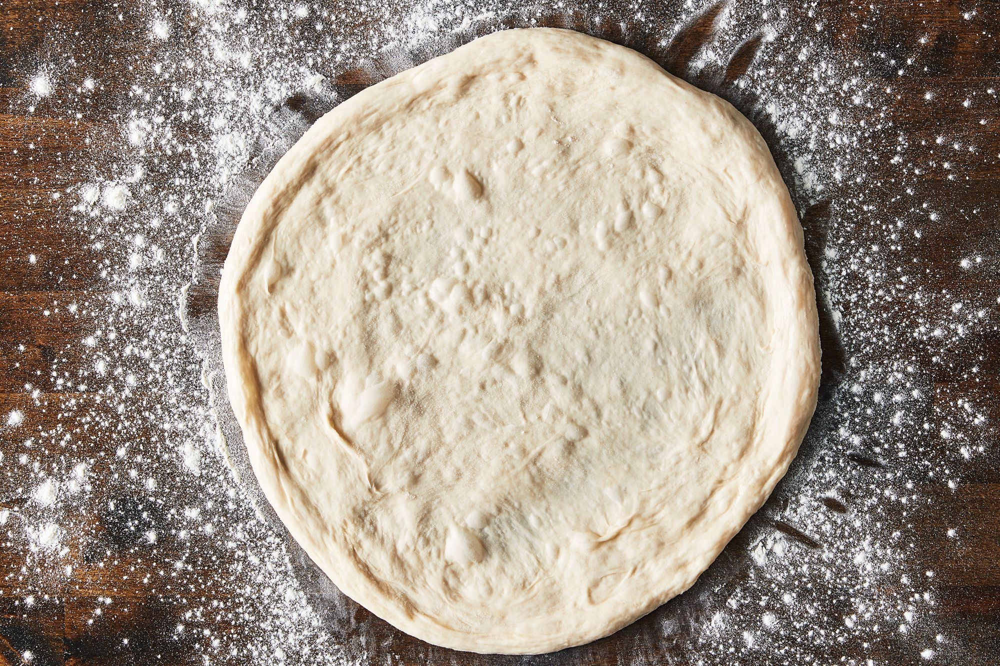

Pizza Dough

Fire up your oven, folks!
Are you ready to make a pizza dough that is the best you could possibly make at home? We all know that homemade pizza dough is for some reason never as good as when you order it out, but dang it we are gonna do our very best to make a better-than-mediocre crust here.
I only feel like writing one paragraph, so you'll just have to trust me that this pizza dough recipe goes back to the time when my ancestors were firing these babies up over ash logs. Ash burns the cleanest and hottest, FYI, and is also going to leave a wake of mass forest destruction in the northeast USofA when the invasive emerald ash borer gets a foothold here. So burn those mature trees down (but be responsible and plant native deciduous trees to replace them like black cherry, hemlock, oak, maple, etc.) Ok, back to pizza dough!
Ingredients
- 2 cups flour
- 1 tbsp garlic powder
- 2 1/2 tsp active yeast
- 1 tbsp sugar
- 2 tbsp olive oil
- 1 tsp salt
- 3/4 cup warm water
Steps
- Preheat the oven to 425 degrees F
- Mix 1 cup of the flour with yeast, salt, sugar, and garlic powder
- Add the water and olive oil and mix with a wooden spoon
- Add flour until the dough is sticky, but not wet
- Knead the dough a little so it forms a cohesive ball (again, it should be sticky, but shouldn't stick to your hands)
- Place in an oiled glass bowl, rub it around the bowl so it gets coated with oil, cover the bowl with plastic wrap and a wet towel, and let rise for 30 minutes in a warm spot (I usually do this on top of the preheating oven)
- Punch the dough down and roll it out on a lightly floured surface
- Transfer to a baking sheet or pizza stone and poke several holes in the dough with a fork (no bubbles on my watch, folks!)
- Pile with toppings of your choice and bake until bubbly
Want more recipes with boring backstories that you'll probably just skip over? Head here